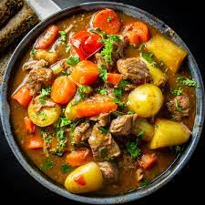

The best Beefstew Recipe

Description of the recipe
Rutabagas and beef chuck roast make this stew a hearty and comforting main dish any night of the week.
Ingredients
- 1 pound boneless meat
- flour
- salt
- black pepper
- vegetable oil
- red wine
- beef broth
- cubed rutabaga
- carrots
- onion
Directions
- Cut beef chuck roast into 3/4-inch pieces. Toss together beef, flour, and 1/4 teaspoon each salt and pepper in a bowl until coated. Heat oil in a large pot over medium-high heat. Add meat and cook until browned, about 5 minutes.
- Add red wine (if using) to pot and simmer until alcohol evaporates, 3 to 4 minutes. Stir in broth, rutabaga, onion, carrots, celery, garlic, bay leaves, herbes de Provence, and remaining salt and pepper. Bring to a boil. Reduce heat and simmer, covered, until meat and vegetables are tender, 30 to 40 minutes. Discard bay leaves.